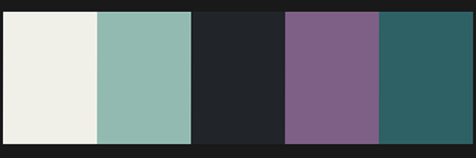

<section id="article-proyectos">

    <div class="row">
        <h3 class="sv-tipo2 color-oscuro py-2">Proceso Proyectual</h3>
        <div class="col-md-4">

            <div class="background-oscuro my-2 py-3">
                <div class="px-3 py-4">
                    <h5 class="sv-tipo1 color-claro">
                        Metodología de Trabajo
                    </h5>
                    <hr class="mx-5 sv-hr-claro ">
                    <p class="sv-tipo1 color-claro2">
                        Creo que el proceso de diseño y desarrollo así como cada parte de ellos son necesariamente
                        sinérgicos.
                    </p>
                    <p class="sv-tipo1 color-claro2">
                        Por eso para el avance óptimo del proyecto es muy importante la síntesis en niveles jerarquicos,
                        es decir definir que es lo mínimo indispensable para el proyecto y llevar tanto el diseño como
                        el desarrollo a la par, reevaluar y repetir el proseso para agregar el siguiente aporte de valor
                        al proyecto.
                    </p>
                    <p class="sv-tipo1 color-claro2">
                        Usando esta forma de trabajo se garantiza un proyecto amalgamado en diseño y funcionamiento
                        optimizando los tiempos necesarios para obtener un proyecto entregable en cada etapa del
                        proceso.
                    </p>
                </div>
            </div>
        </div>
        <div class="col-md-4">

            <div class="background-oscuro my-2">
                <div class="px-3 py-4">
                    <h5 class="sv-tipo1 color-claro">
                        Comienzo del proyecto
                    </h5>
                    <hr class="mx-5 sv-hr-claro ">
                    <p class="sv-tipo1 color-claro2">
                        Establecer la sintesis principal del proyecto, y de ahí pensar en el estilo y referencias a
                        tener en cuenta durante el desarrollo.
                    </p>
                </div>
            </div>

            <div class="background-claro my-2 mt-4">
                <div class="px-3 py-4">
                    <h5 class="sv-tipo1 color-oscuro">
                        Estructura y Contenido
                    </h5>
                    <hr class="mx-5 sv-hr-oscuro ">
                    <p class="sv-tipo1 color-oscuro">
                        El contenido hace posible la definicion de la estructura y el diseño de la estructura es posible
                        que el contenido requiera algun cambio como el uso de alguna imagen reprecentariva o el cambio
                        de extencion de algun texto.
                    </p>
                </div>
            </div>

            <div class="background-intermedio my-2 mt-5">
                <div class="px-3">
                    
                </div>
                <div class="px-3 pb-4">
                    <h5 class="sv-tipo1 color-oscuro">Paleta de Color y Tipografías</h5>
                    <p class="color-claro">
                        La paleta de colores y las tipografías es recomendable tenerlas predefinidas al comienzo para
                        mantener un estilo unificado en las distintas partes del diseño y poder realizar
                        previsualizaciones más útiles al momento de definir estructuras.
                    </p>
                </div>
            </div>

        </div>
        <div class="col-md-4">
            <div class=" background-intermedio my-2">
                <div class="px-3 py-4">
                    <h5 class="sv-tipo1 color-oscuro">Tecnologías</h5>
                    <p class="color-claro">
                        Teniendo una idea de lo anterior, se tendrían que definir los requerimientos del proyecto y el
                        presupuesto.
                    </p>
                    <p class="color-claro">
                        Con esto me refiero a que características tendría que tener el "hosting" o como se deberia
                        alojar el proyecto para que los usuarios tengan acceso.
                    </p>
                    <p class="color-claro">
                        ¿Va a requerir interacción con los usuarios o podría ser estático (como esta web)?, ¿va a
                        consumir recursos o información de alguna base de datos?
                    </p>
                </div>
            </div>
            <div class="background-claro my-2 mt-4">
                <div class="px-3 py-4">
                    <h5 class="sv-tipo1 color-oscuro">
                        Proyectos Realizados
                    </h5>
                    <hr class="mx-5 sv-hr-oscuro ">
                    <p class="sv-tipo1 color-oscuro">
                        En mi github se encuentran subidos algunos proyectos que puedes revisar. O a continuación
                        también dejo a dispocicion algunos enlaces a proyectos publicados.
                    </p>
                    <div class="background-intermedio p-1 my-2 text-center">
                        <h6 ><a class="sv-tipo1 color-claro" href="https://github.com/SofiaVidela" target="_blank"> Github &nbsp; <svg xmlns="http://www.w3.org/2000/svg" width="16"
                            height="16" fill="currentColor" class="bi bi-github" viewBox="0 0 16 16">
                            <path
                              d="M8 0C3.58 0 0 3.58 0 8c0 3.54 2.29 6.53 5.47 7.59.4.07.55-.17.55-.38 0-.19-.01-.82-.01-1.49-2.01.37-2.53-.49-2.69-.94-.09-.23-.48-.94-.82-1.13-.28-.15-.68-.52-.01-.53.63-.01 1.08.58 1.23.82.72 1.21 1.87.87 2.33.66.07-.52.28-.87.51-1.07-1.78-.2-3.64-.89-3.64-3.95 0-.87.31-1.59.82-2.15-.08-.2-.36-1.02.08-2.12 0 0 .67-.21 2.2.82.64-.18 1.32-.27 2-.27.68 0 1.36.09 2 .27 1.53-1.04 2.2-.82 2.2-.82.44 1.1.16 1.92.08 2.12.51.56.82 1.27.82 2.15 0 3.07-1.87 3.75-3.65 3.95.29.25.54.73.54 1.48 0 1.07-.01 1.93-.01 2.2 0 .21.15.46.55.38A8.012 8.012 0 0 0 16 8c0-4.42-3.58-8-8-8z" />
                          </svg>
                        </a></h6>
                    </div>
                    <div class="background-intermedio p-1 my-2 text-center">
                        <h6 ><a class="sv-tipo1 color-claro" href="https://frontendsvv.web.app/" target="_blank"
                                rel="noopener noreferrer">Página + ApiWeb + Base de Datos</a></h6>
                    </div>
                    <div class="background-intermedio p-1 my-2 text-center">
                        <h6 ><a class="sv-tipo1 color-claro" href="#article-perfil" target="_blank"
                                rel="noopener noreferrer">Página Estática (esta web)</a></h6>
                    </div>
                </div>
            </div>
        </div>
    </div>
</section>